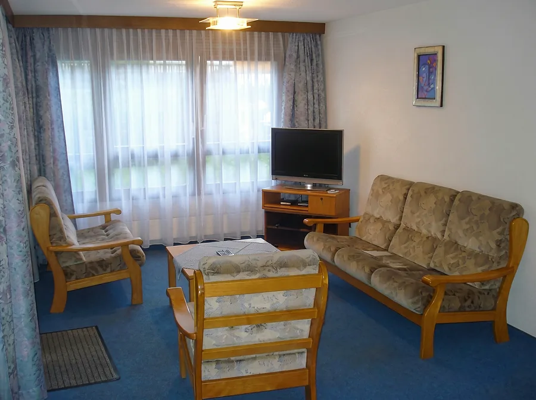
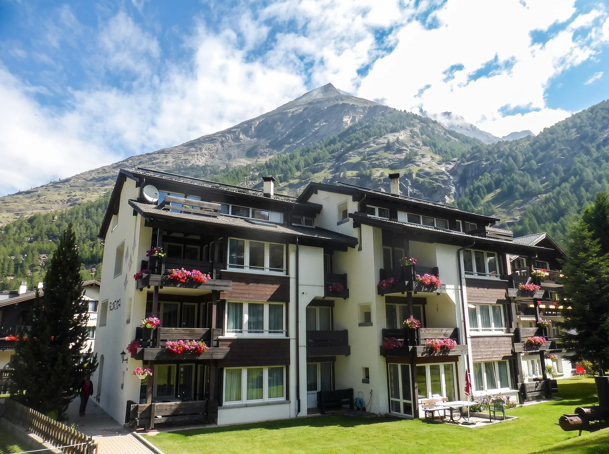
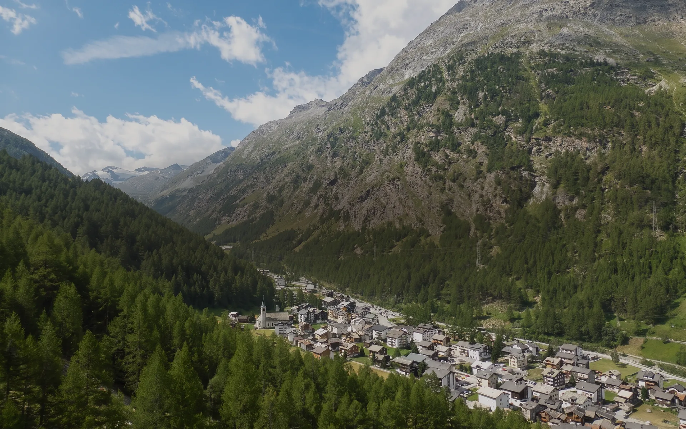
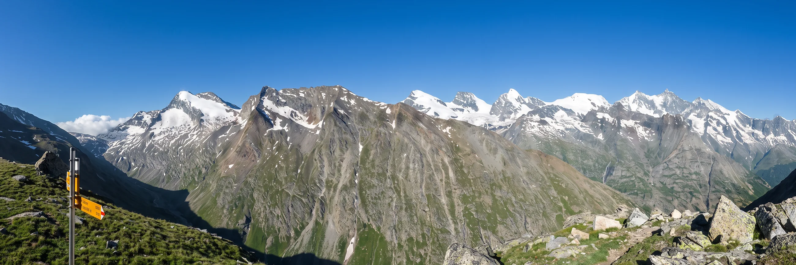
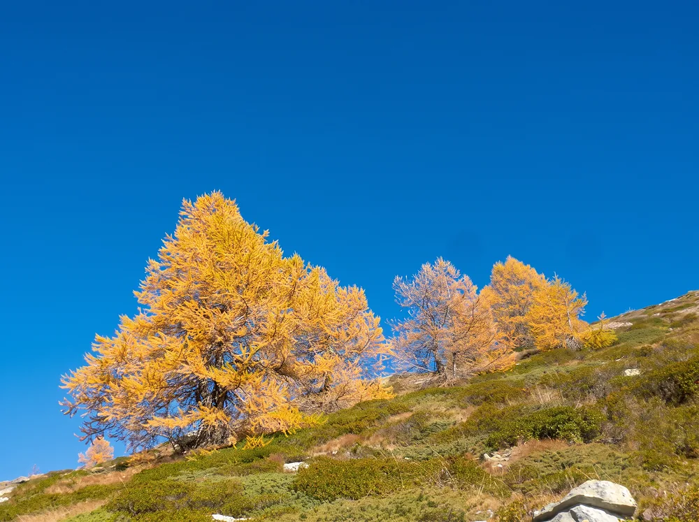
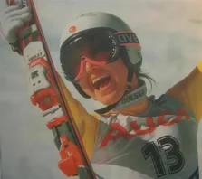
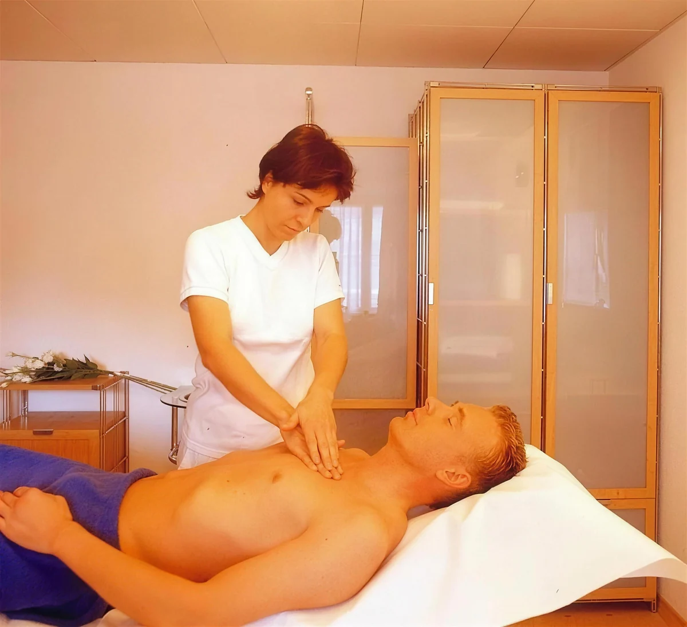

Ferienwohnungen · Saas-Almagell
ChaletRustica
Drei Ferienwohnungen von Heidi und Damian Andenmatten-Zurbriggen, zentral und trotzdem ruhig, direkt am Bach.
Mitten im Dorf. Und doch am Bach.
Der rustikale Neubau mit drei Sternen liegt sehr zentral und trotzdem in ruhiger Lage. Direkt daneben fliesst ein Bach vorbei, und Sie haben freie Sicht auf das wunderschöne Bergpanorama.


Werfen Sie einen Blick hinein.
Drei Wohnungen, jede mit Südbalkon.
Im Chalet Rustica werden drei komfortable Wohnungen vermietet, welche wir Ihnen nun vorstellen.

Bei allen Wohnungen im Preis inbegriffen: Bettwäsche, Dusch- und Handtücher, Küchentücher, Heizung, Warmwasser und Strom, Endreinigung und Kurtaxe. Die hauseigene Waschküche steht Ihnen zur Verfügung. Damit Ihr Aufenthalt noch angenehmer ist, wird in den Wohnungen nicht geraucht; Haustiere sind nicht gestattet.
Preise anfragen
Das Tal, gleich vor der Tür.
5
Minuten zu Fusszu den Skiliften und Sportanlagen, zur Bushaltestelle, zum Parkplatz und zu den Einkaufsläden.





Ihre Beharrlichkeit zahlt sich aus.
Heidi Andenmatten-Zurbriggen


Bereits im Juniorenalter galt Heidi als grösste Schweizer Nachwuchshoffnung. Ihr Durchhaltevermögen wurde immer wieder auf die Probe gestellt: eine Meniskusoperation, eine Polyarthritis, wegen der sie im Rollstuhl sass und einen Winter ausfiel, ein Schien- und Wadenbeinbruch. 1998 beendete sie am Weltcup-Final in Crans-Montana ihre Skikarriere, mit einem lachenden und einem weinenden Auge.
14
Jahre Skikarriere, bis zum Weltcup-Final 1998
20
Podestplätze im Weltcup, in Super-G und Abfahrt
2
Mal WM-Silber: 1996 im Super-G, 1997 in der Abfahrt

Heidis zweite Karriere.
Die vielen Verletzungen und Krankheiten während ihrer Skikarriere bewogen Heidi dazu, die von Benno Poli angewandten Methoden, die ihr geholfen hatten, an andere Menschen weiterzugeben. Von 1998 bis 2001 machte sie in der VDMS Aarau die Ausbildung zur medizinischen Masseurin. Seither führt Heidi ihre eigene Massagepraxis im Hotel Pirmin Zurbriggen.
Möchten Sie Ihren nächsten Urlaub im Chalet Rustica verbringen?
Sie können telefonisch, per E-Mail oder über das Formular anfragen. Wir freuen uns über Ihre Anfrage.
Damian & Heidi Andenmatten-Zurbriggen Chalet Rustica CH-3905 Saas-Almagell +41 27 957 10 55 info@chalet-rustica.ch